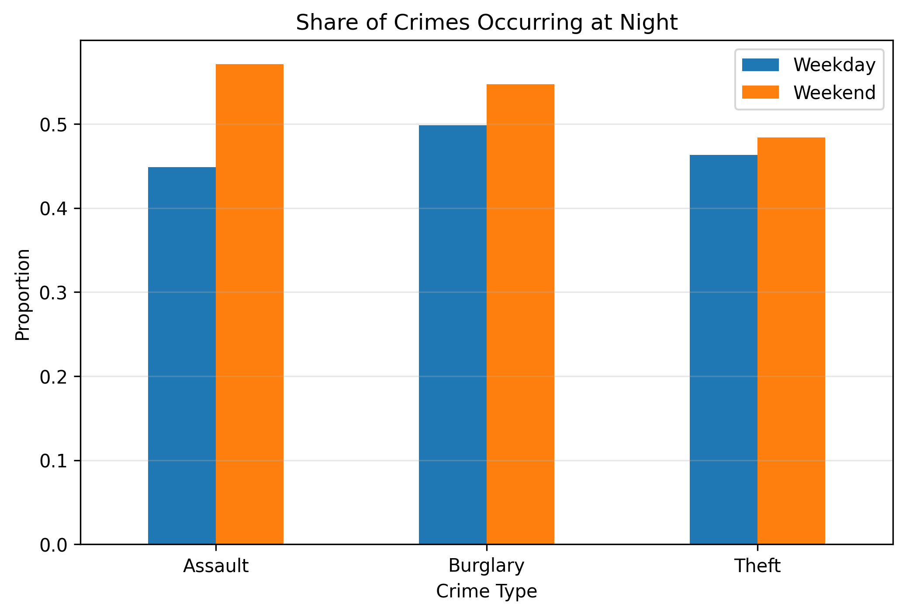

It is often assumed that crime increases on weekends because nightlife, alcohol consumption, tourism, and late-night mobility all become more intense. In this analysis, we ask a slightly more careful question: does crime in San Francisco actually become more common on weekends, or does it mainly change in timing and location?
We use the San Francisco Police Department incident dataset provided through the course workflow. The dataset contains police-recorded incidents from 2003 to 2025, where each row represents a reported incident with attributes such as category, date, time, and geographic coordinates. For this story, we focus on three crime types: assault, burglary, and theft. We define weekends as Saturdays and Sundays, while weekdays cover Monday through Friday.
This distinction matters because reported crime data is not a direct measure of all crime that happens. It reflects incidents that were recorded by the police, which means the dataset is shaped both by human behavior and by reporting practices. Even with that limitation, it is still useful for comparing broad temporal and spatial patterns across the city.
Our main finding is that the weekend effect is not primarily about a dramatic increase in total crime volume. Instead, the strongest signal is a shift in when incidents happen. Assault becomes more concentrated at night on weekends, while burglary and theft change more modestly. The visualizations below support that argument by combining a summary comparison, a spatial density map, and an interactive hourly profile.

The clearest change appears for assault. Compared with weekdays, a noticeably larger share of assaults happens at night on weekends. Burglary and theft also shift slightly toward the night, but the difference is much smaller.
This suggests that weekend dynamics affect violent crime more strongly than property crime. A plausible interpretation is that assaults are more sensitive to nightlife and late-evening social activity, while burglary and theft follow routines that are less tightly linked to the weekend schedule.
The heatmap complements the temporal analysis by showing that crime is not evenly distributed across San Francisco. Instead, incidents concentrate in specific parts of the city, especially around dense central and northeastern areas. This makes the map more than background context: it shows that weekend patterns unfold within an already uneven urban geography.
We chose a heatmap rather than a raw point map because the point map quickly becomes cluttered and hides density differences through overplotting. The heatmap makes it easier to see hotspots at a glance, which better supports the storytelling goal of the assignment.
This interactive chart makes it easier to inspect the 24-hour rhythm of each crime type separately. Assault becomes much more concentrated late at night, while theft follows a broader daily cycle and burglary shows a smaller shift across the day.
Together with Figure 1, this supports the main narrative of the page: weekends do not simply generate more crime overall, but instead reorganize crime in time, especially for violent incidents. The interactive format also lets the reader compare crime types directly rather than forcing all patterns into a single static figure.
Crime does not appear to increase dramatically on weekends in total volume. Instead, the main weekend effect is a shift in timing, with a stronger concentration of incidents during nighttime hours, most clearly for assault.
Looking across the three figures, the story is consistent. Figure 1 shows the weekend night shift directly, Figure 2 places the incidents in geographic context, and Figure 3 shows how the daily rhythm differs across crime types. Together, they suggest that weekends change the rhythm and spatial expression of crime more than they change the absolute number of incidents.
All group members contributed approximately equally to the assignment.